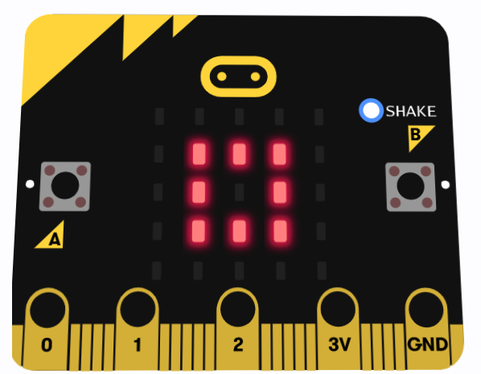
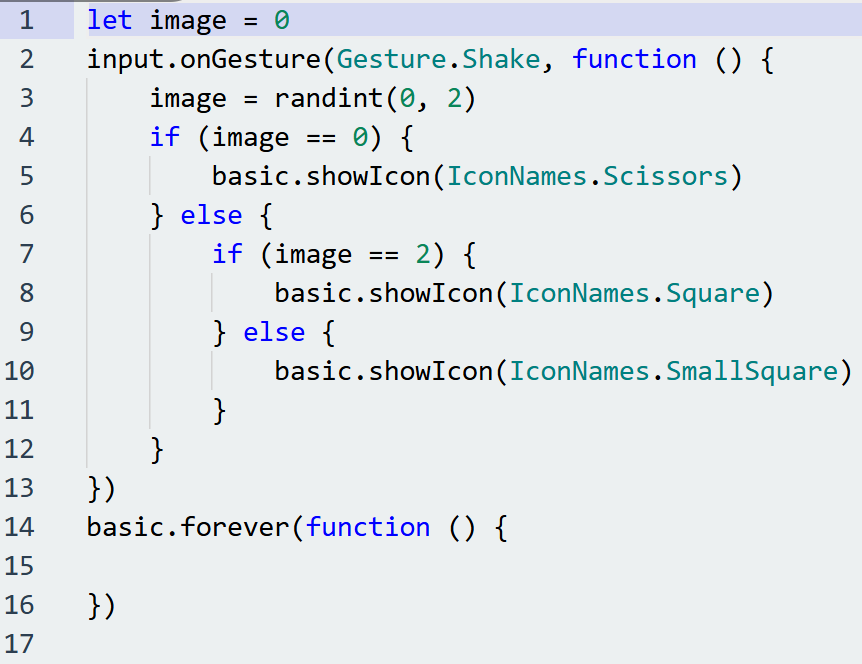

English Work
Prepare and present a short English talk show segment. Choose a topic, assign roles (host, guest, etc.), and create a script or outline
Writing, Reading, Listening Practices.

Talkshow Project
My team prepared a short 15 minute talkshow where I was the host and 2 other people wwere the guests. Our talkshow was about Artificail intellegence and the proper ways to use it.

Writing
A simple writing assignment written using MLA format

Reading
A simple reading assignment written using MLA format

Listening
A simple Listening assignment in which there was an audio file that we were told to get the answers from written using MLA format
Global Perspectives Work
Understanding different perspectives of people from all around the world. Taking a look at the situation about the world and how we can describe them

Hallyu Essay
Creating an essay about the current situation of hallyu, a global sensation filled with unique cultures, fashion, and entertainment in malaysia
History Work
Study regarding the American revolution and its impacts on the world and future generations. The American revolution provided insparation for other nations to fight for their own independence from countries ruling them at the time

Continental Congress Poster
Manually creating a poster about the first continental congress which had majorly contributed to the American revolution
Biology Work
Investigating breathing and respiratory mechanics and how they work. Additionally the inner working of the body's movement including the skelaton, bones, and muscles

Biology CO2 production Report
Based on the activities done during PE, we collected data that we used to meassure the amunt of CO2 produced during our activities, carfully and anylizing the data to producs the best report
Chemistry Work
Study about solution and its subtopics, chromatography and the fragments that construct the subject

Chromatography Poster
Constructing a poster about chromatography. The poster includes the meaning of chromatography, the instuctions to do an experiment centered around chromatography and the materials, and finally the results of the experiment we did and some other extra usefull information.
Physical Education Work
Basketball training involves practicing essential skills such as dribbling, shooting, passing, and defense to improve overall performance and teamwork on the court.

Basketball dribbling training
Beginner dribbling training, where we divided ourselves into groups of three, practiced fundamental dribbling techniques, and took turns running across the court while maintaining control of the ball.
Mathematics Work
Study regarding angles and shapes extending from 2 to 3 dimensional shapes; covering a wide variety of polygons, more specifically quadrilaterals, and polyhedrons including eulers formula for the topic

Project Nirvana
In groups of 4, we drew shapes according to the cartesian coordinate plain and use transformation techniques usch as translation, rotation, and enlargement to create beautiful repeating patters
Arts Work
Creating beautiful artworks from used newspapers, known as "collages," involves cutting, arranging, and pasting pieces of paper to form unique and visually appealing designs.
Project Nirvana
We continued the project from art and added foam and cutted it into the shapes and colors of what was needed to completely fill the grid
Computer Science Work
Study regarding the aspects of Artificial intellegence and machine learning. Understanding the subject by using multiple beginner AI platforms including Pictoblox and Microbit
Microbit
Microbit Rock Paper Scissors game
A simple rock paper scissors game using microbit, an awward winning programming device that let's students lear about programming through a block based

Code
Indonesian Work
The main project for the current term is to create a peom or "Puisi" made up of 4 verses and working with music class to musicalize the peom

Musikalisasi Puisi
The purpose of this assignment is to construct or pick out a poem then create a music cover of the peom your group chose. In this scenario, my group constructed our own poem, made amusic cover, as well as a music video. This project will last 2 terms and during term 4 is the time where we will perform our creations.